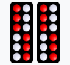
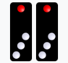
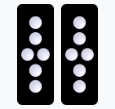
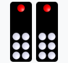
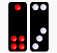
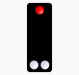
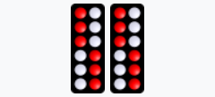
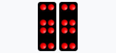
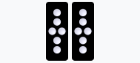
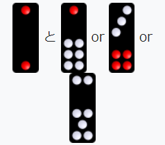

牌九(파이궈, 파이궈)란?
주로 중화권에서 행해지는 게임으로, 9개의 타일로 구성된 천구패(天九牌)를 사용한다.
미국에서는 파이 고우 포커와 구별하기 위해 '파이 고우 타일(pai gow tiles)'이라고도 한다.
일부 카지노에도 도입되고 있다.
기본 규칙
주사위를 두 개씩 늘어놓은 듯한 디자인의 21종 32개의 타일로 구성되어 있으며, 1과 4의 눈이 빨간색으로 되어 있는 것이 특징이다.
문패
총 32개의 타일 중 11종은 똑같은 무늬를 가진 타일이 2장씩(총 22장) 있다. 이를 문패 또는 문자라고 부른다.| 牌 | 명칭 | 영어(English) | 수 | 소개 |
|---|---|---|---|---|
|  | 天牌 (天平) |
Teen(틴) | 12 | 홍색 6점, 흰색 6점. 하늘을 상징하는 24절기를 나타낸다. 문패에서 가장 위가 높다. |
 |
地牌 (자패) |
Day(데이) | 2 | 홍 2점. 대지의 동서남북 4방위를 상징한다. |
 |
人牌(인패) (인파이) |
High 8 | 8 | 홍8점. 인의예지신(仁義禮智信) 등 인간의 도덕을 상징한다. |
|  | 그리기 및 구스 | High 4 | 4 | 빨간색 1점, 흰색 3점. 八절기(춘절, 원소절, 청명, 단오, 중원, 중추, 중양, 동지)를 상징한다. |
 |
자두, 자두 브랜드 | High 10 | 10 | 흰색 10점. 매화꽃을 상징한다. |
|  | 장삼(長三)、장패(長牌)、장삼(長衫) | High 6 | 6 | 흰색 6점. |
| 판자, 판자 (반, 반텐) |
Low 4 | 4 | 흰색 4점. (등받이가 없는) 널빤지 의자를 닮았다고 하여 |
|
 |
도끼, 호랑이 머리 (후토, 코토) |
11 | 11 | 흰색 11점. |
 |
빨간색 머리, 4-6, 화면 (고토우, 시로쿠, 비오부) |
Low 10 | 10 | 빨간색 4점, 흰색 6점. |
|  | 高脚七 (공작지(工厂地)) |
High 7 | 7 | 빨간색 1점, 흰색 6점. |
| 동추(銅錘)、영육(伶冧六) (同脚, 令陵律) |
Low 6 | 6 | 빨간색 1점, 흰색 5점. |
문패
총 32개의 패 중 문패 22개를 제외한 10종(각 1장씩)을 무패 또는 무자라고 한다. 무패는 눈의 합계에 따라 분류된다.| 牌 | 명칭 | 영어(English) | 수 | 소개 |
|---|---|---|---|---|
 |
잡동사니 | 9 | 9 | 2가지 종류가 있다 하나는 홍4점 백5점, 다른 하나는 백9점이다. |
 |
잡팔 | Low 8 | 8 | 2가지 종류가 있다 둘 다 흰색 8점이지만 배열이 다르다. |
 |
雑七 (대략) |
Low 7 | 7 | 2가지 종류가 있다 하나는 홍4점 백3점, 다른 하나는 백7점이다. |
|  | 雑五 (자쓰고) |
5 | 5 | 2가지 종류가 있다 하나는 붉은색 5점, 다른 하나는 흰색 5점이다. |
 |
2-4, 6 높이, 6 큰, 6 큰, 6 큰鶏 (니시, 코로쿠, 다이로쿠, 오토리로) |
Gee Joon(지준) | 6(or3) | 지존패 중 하나. 6으로도 3으로도 사용할 수 있는 카멜레온 타일. |
|  | 丁三、細三、大三、高三、么鶏三 (정씨, 사이씨, 다이씨, 고씨, 모케이씨) |
Gee Joon(지준) | 3(or6) | 지존패 중 하나. 3으로도 6으로도 사용할 수 있는 카멜레온 타일. |
역할 순위
역할은 대패 또는 대자 두 개의 패로 구성된다. 16위까지의 페어(pair) 역할을 특히 보(BO)라고 부른다.| 순위 | 組牌 | 명칭 | 영어(English) | 소개 |
|---|---|---|---|---|
| 최고위 |  |
최고 보물 (시순포) |
Geen Joon(지준) | 정3과 정4로 구성되어 있다. 개별적으로는 약한 타일이지만 페어에서는 최고위권이다. |
| 2위 |  | 쌍천 (소전) |
Teen(틴) | 한 쌍의 천牌(천패) |
| 3위 |  |
쌍지 | Day(데이) | 한 쌍의 지牌(지패) |
| 4위 |  | 쌍둥이 (蒼然) |
Yun(윤) | 한 쌍의 사람 타일 |
| 5위 |  |
쌍화 (소와) |
Gor(고르) | 한 쌍의 일본식 타일 |
| 6위 |  |
쌍매 (소바이) |
Mooy(무이) | 한 쌍의 매화패 |
| 7위 |  | 쌍장 (소조) |
Chong(장) | 장삼패 한 쌍 |
| 8위 |  |
쌍판 (소반) |
Bon(반) | 한 쌍의 바둑판 |
| 9위 |  |
쌍도끼 (소후) |
Foo(푸) | 한 쌍의 도끼 머리 |
| 10위 |  |
쌍홍두 (소코토우) |
Ping(핑) | 한 쌍의 홍두깨패 |
| 11위 |  |
쌍고다리 (蒼空峡) |
Tit(티트) | 한 쌍의 고다리 칠패 |
| 12위 |  |
双伶冧 (蒼玲陵) |
Look(룩) | 伶冧六牌(伶冧六牌) 페어 |
| 13위 |  |
잡동사니 | Gow(가우) | 잡다한 구슬 한 쌍 |
| 14위 |  |
잡팔 (ざっぱち) |
Bot(バット) | 雑八牌のペア |
| 15위 |  |
雑七 | Chit(치트) | 잡칠패 한 쌍 |
| 16위 |  |
雑五 (자쓰고) |
Ng(ㄴㄴㄴ) | 잡다한 다섯 개의 타일 한 쌍 |
| 17위 |  |
왕, 천왕王 (오, 천둥) |
Wong(ウォン) | 天牌とは12と九の組み合わせ |
| 18위 |  |
王、地王 (おう、じおう) |
Wong(원) | 지패란 2와 9의 조합 |
| 19위 |  |
천궁(天槓) (간, 간질) |
Gong(곤) | 천부인은 12와 8의 조합 |
| 20위 |  |
지렁이、지렁이 (관(關), 지관(關)) |
Gong(곤) | 地槓とは二と八의 조합 |
| 21위 |  |
하이 나인, 스카이 하이 나인 (공수, 천공) |
High 9 | 천고구비는 12와 7의 조합 |
| 22위 |  | 하이 나인, 어스 하이 나인 (공휴일, 공휴일) |
High 9 | 지고쿠는 2와 7의 조합 |
-
보(Bo) > 웡(Wong) > 공(Gong) > 고구(High 9) > 무역(No Role)